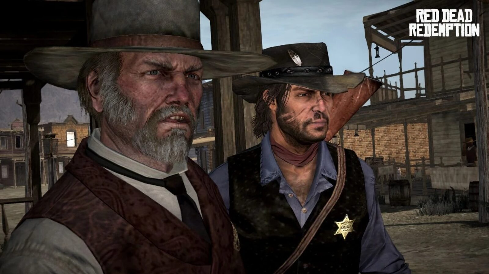
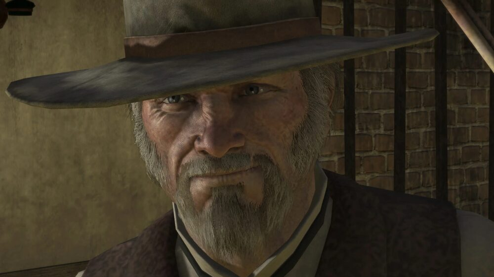
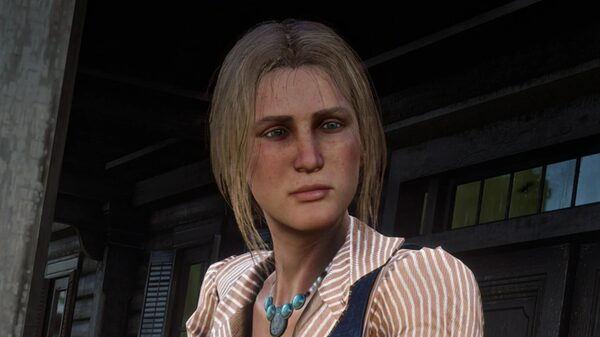
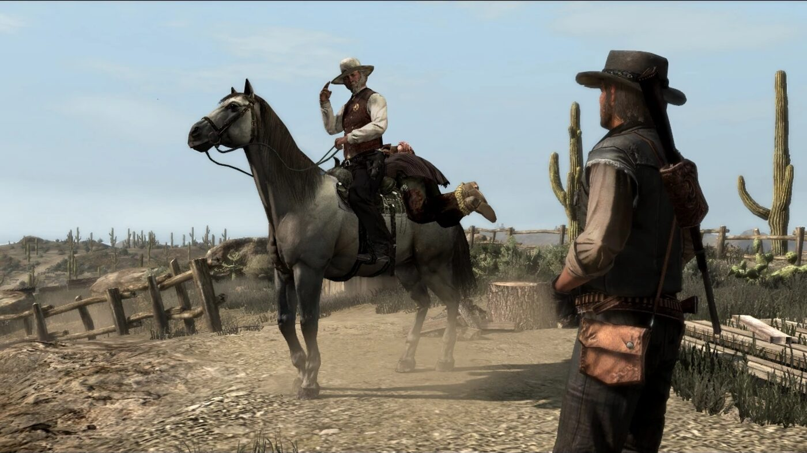

Character · Armadillo
Leigh Johnson
Leigh Johnson is the Marshal of Armadillo, a weary but principled lawman who partners with John Marston in the state of New Austin. He agrees to help John hunt Bill Williamson in exchange for John's help cleaning up the territory.
He works his jurisdiction with two loyal deputies, Jonah and Eli.
- Born
- c. 1860
- Status
- Alive (retires 1914)
- Nationality
- American
- Role
- Marshal of Armadillo
- Games
- Red Dead Redemption
Biography
A lawman's bargain
In "Political Realities in Armadillo", Johnson agrees to help John find Williamson if John helps clean up New Austin. Together they track Walton's Gang, clear the Bollard Twins from Pike's Basin, and capture Williamson's second-in-command Norman Deek after the Ridgewood Farm raid.
Fort Mercer
Johnson leads the Tumbleweed prisoner exchange for Bonnie MacFarlane, which he correctly reads as a trap, and joins the assault on Fort Mercer. When Williamson is found to have fled to Mexico, Johnson and John part ways.
Personality
Johnson is a tired, cynical southern gentleman who has held his post for years. He is decent under the weariness, and takes the safety of Armadillo seriously.
Relationships

John Marston
His partner in New Austin; they trade help hunting Williamson for cleaning up the territory.

Bill Williamson
The outlaw they hunt across New Austin before he flees to Mexico.

Bonnie MacFarlane
The rancher he helps rescue at Tumbleweed and returns to Armadillo.
Fate
Johnson survives Red Dead Redemption. He steps down as marshal in 1914 after seventeen years, and says he intends to move as far from Armadillo as he can.
Behind the scenes
Leigh Johnson appears in Red Dead Redemption (2010) and its 2024 remaster. He is voiced by Anthony De Longis. The Game of the Year guide describes him as a fifty-year-old ageing cynic.
Trivia
- He is a widower; his wife Priscilla died in 1903.
- A race course in the Liars and Cheats add-on, "L. Johnson's Run", is named after him.
- He works alongside his deputies Jonah and Eli throughout the New Austin missions.
Gallery
